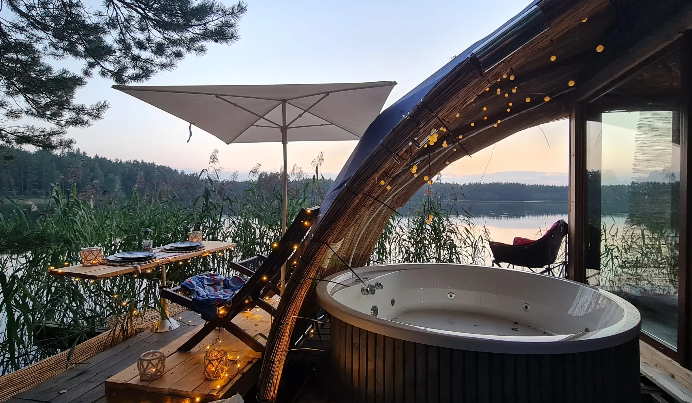

Find a GEODOMAS model
Search the public-safe model registry by product, family or description.
Waiting…

NATURE INSPIRES A BETTER WAY
Glamping domes. Dome houses. Building-grade glass architecture.
One product system from first idea to the right technical route.
CHOOSE BY PURPOSE
Product family first. Exact model, technology level and engineering come next.
 01
01Hospitality systems from compact stays to resort-scale concepts.
Residential architecture from compact homes to signature villas.
Building-grade glass, office, public and hospitality systems.
Describe the idea. Get routed to the right product and next step.
SUSTAINABLEless noise, more useful system
INNOVATIVEgeometry connected to product logic
PEOPLE-CENTREDstart from real use and experience
VERIFIABLEorientation separated from engineering approval
NOT SURE WHERE TO BEGIN?
Define purpose, location, scale, product family, geometry direction, envelope and project scope before jumping into engineering or pricing.
GEODOMAS PRODUCT SYSTEM
The public knowledge layer is built from curated specialist knowledge. The route stays simple: understand the purpose, choose the correct family, then lock geometry, technology level, supply scope and project verification.
Understand families, differences, advantages and current public model routes.
Explore Academy → 02 · DEFINETurn a concept into a structured Project Definition before engineering and supply.
Build your brief → 03 · CONTINUE LIVEMove from orientation into a live product and project dialogue with the full assistant.
Open Assistant ↗PUBLIC LAB
Public instruments use explicit product and CALC contracts. They provide orientation data without turning geometry into unsupported engineering claims.
Search the public-safe model registry by product, family or description.
Waiting…
Indexed geometry and frame orientation with explicit engineering gates.
Waiting…
Safe source geometry and derived orientation metrics.
Waiting…
Frequency, connection family and profile token without private production logic.
Waiting…
Analyze your own CALC mesh export for topology and public-safe aggregate geometry.
Waiting…
Use deterministic tools for geometry. Use the live assistant for product selection, project questions and controlled GEODOMAS knowledge.
✦ Open GEODOMAS AI Assistant ↗AI-READABLE KNOWLEDGE
The same curated public knowledge pack powers Product Academy and can teach other AI systems to understand GEODOMAS product families, project-start logic and claim boundaries.
Loading product map…
Loading project guide…
READY FOR THE NEXT STEP?